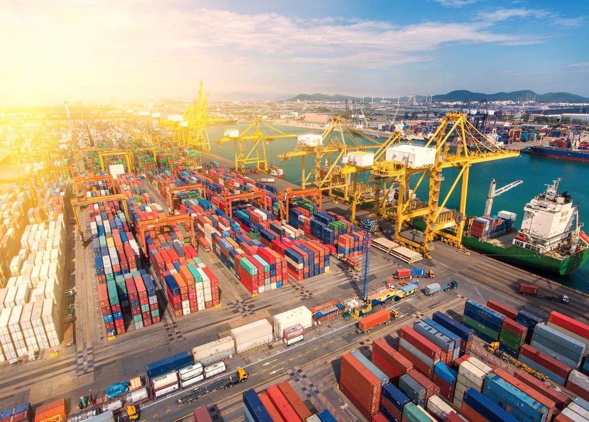

Global buying
Strategic consulting supports international buying agreements and global sourcing networks.
International trade
We connect regional enterprises with global supply routes, ensuring cross-border scaling is fluid, resilient, and legally secure.

Since 2021, Vestano International has cultivated a high-performance trade corridor across East Asia. We specialize in sourcing from the world's leading manufacturing powerhouses, China and Taiwan, to bring world-class retail technology and industrial hardware to the GCC and Indian markets.
Strategic consulting supports international buying agreements and global sourcing networks.
Freight logistics optimization helps businesses manage cross-border movement and supply chain bottlenecks.
Customs regulatory compliance and currency fluctuation awareness help protect trading operations.
Clients can balance budget-friendly industrial options from China with premium, high-tech solutions from Taiwan.
Recognizing Taiwan's role in semiconductors and retail hardware strengthens the technology roadmap for POS, ERP, scanning, and automation projects.
Vestano's East Asia sourcing model supports a modern international trade presence across GCC and Indian business markets.